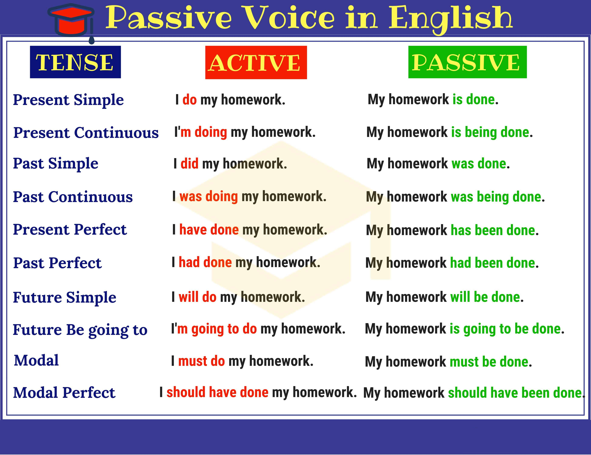

Chapter 3 - Active & Passive
Active Voice and Passive Voice
There are two main “voices” in English writing: the active voice and the passive voice. You’ve probably heard a lot about them—and you’ve probably been warned away from the passive voice. But what exactly are they?
In the simplest terms, an active voice sentence is written in the form of “A does B.” (For example, “Carmen sings the song.”) A passive voice sentence is written in the form of “B is done by A.” (For example, “The song is sung by Carmen.”) Both constructions are grammatically sound and correct. Let’s look at a couple more examples of the passive voice:
I’ve been hit! (or, I have been hit!)
Jasper was thrown from the car when it was struck from behind.
You may have noticed something unique about the previous two sentences: the subject of the sentence is not the person (or thing) performing the action. The passive voice “hides” who does the action. Despite these sentences being completely grammatically sound, we don’t know who hit “me” or what struck the car.
The passive is created using the verb to be and the past participle. When identifying passive sentences, remember that to be has other uses than just creating the passive voice. “She was falling” and “His keys were lost” are not passive sentences. In the first, to be is a continuous past verb, and in the second to be is past tense linking verb. There are two key features that will help you identify a passive sentence:
